Junior Caminero
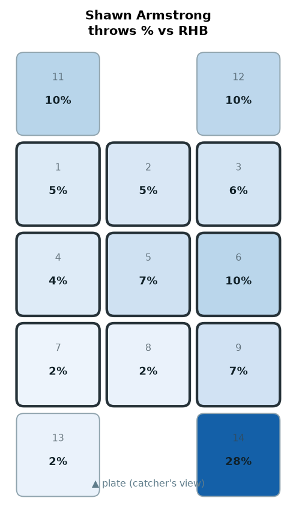
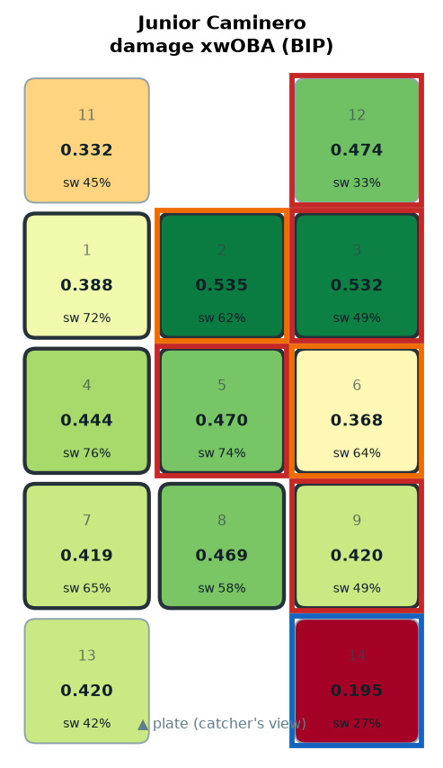
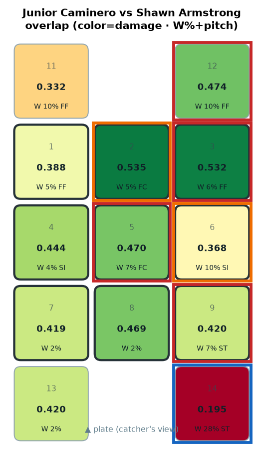
CONFIRM COLD OUT-DN-1B ← mainly ST (W 28.5%) · HOT OUT-UP-1B ← mainly FF (W 9.8%) · HOT HEART ← mainly FC (W 7.2%) · HOT HI-AWAY (1B) ← mainly FF (W 6.3%)
CONFIRM COLD OUT-DN-1B · HOT OUT-UP-1B · HOT HEART · HOT HI-AWAY (1B)
Yandy Díaz

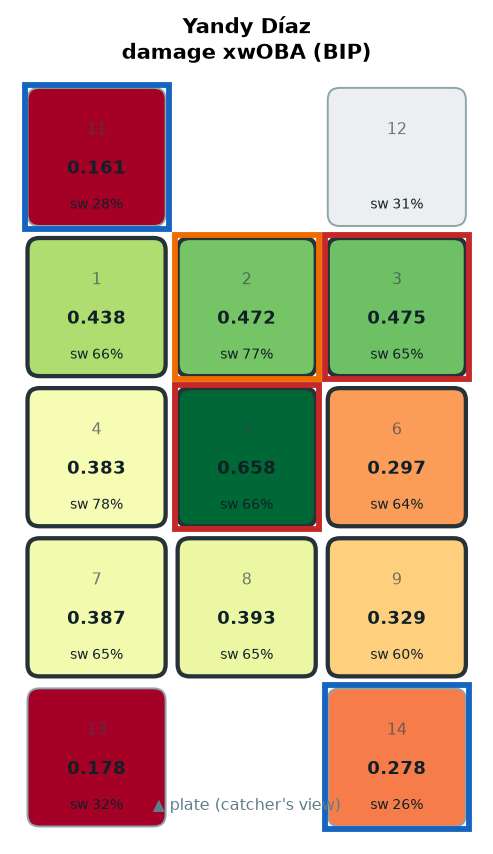
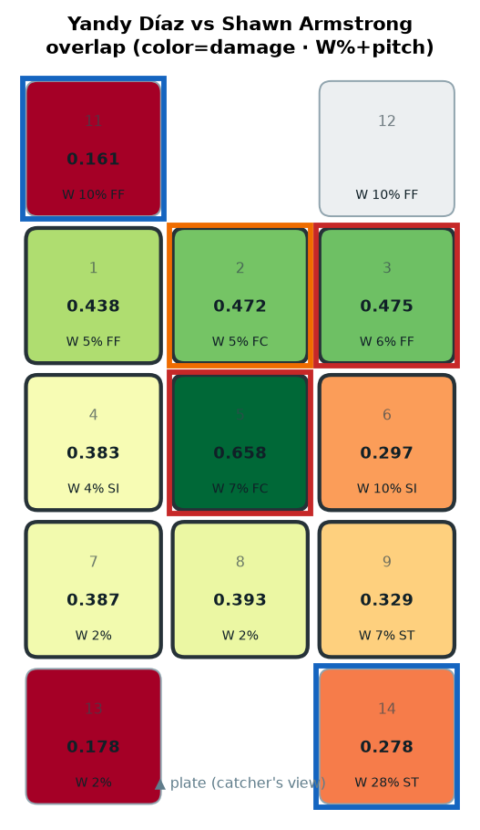
CONFIRM HOT HEART ← mainly FC (W 7.2%) · COLD OUT-DN-1B ← mainly ST (W 28.5%) · HOT HI-AWAY (1B) ← mainly FF (W 6.3%) · COLD OUT-UP-3B ← mainly FF (W 10.3%)
CONFIRM HOT HEART · COLD OUT-DN-1B · HOT HI-AWAY (1B) · COLD OUT-UP-3B
Jonathan Aranda

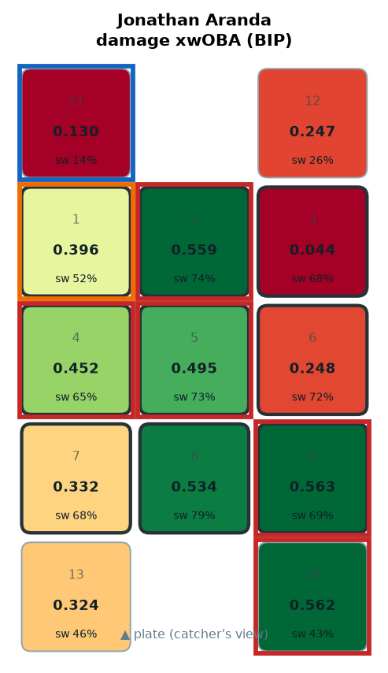
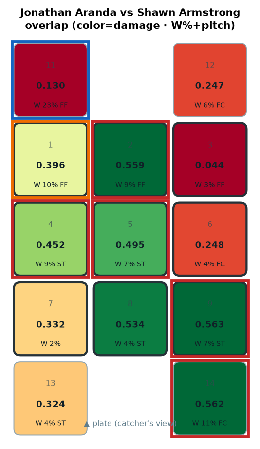
CONFIRM HOT MID-IN ← mainly ST (W 8.6%) · HOT OUT-DN-1B ← mainly FC (W 11.1%) · HOT HI-MID ← mainly FF (W 9.5%) · HOT LO-AWAY ← mainly ST (W 6.8%)
CONFIRM HOT MID-IN · HOT OUT-DN-1B · HOT HI-MID · HOT LO-AWAY
Liam Hicks
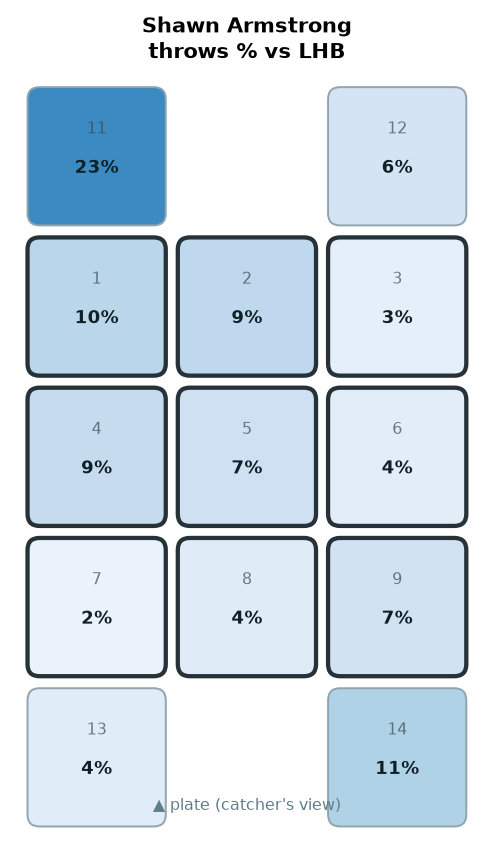
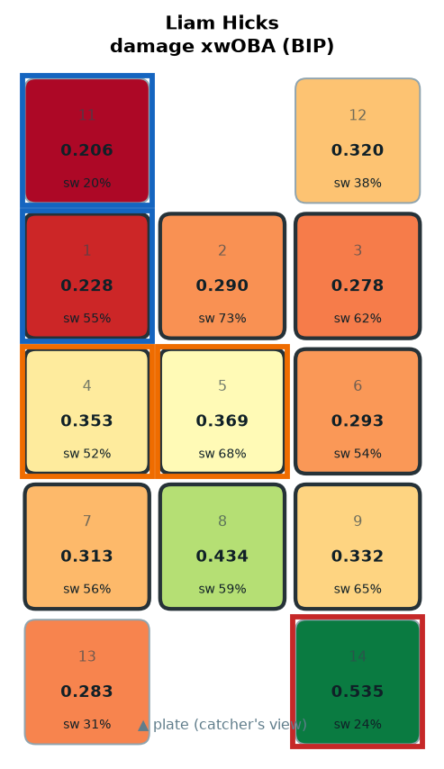
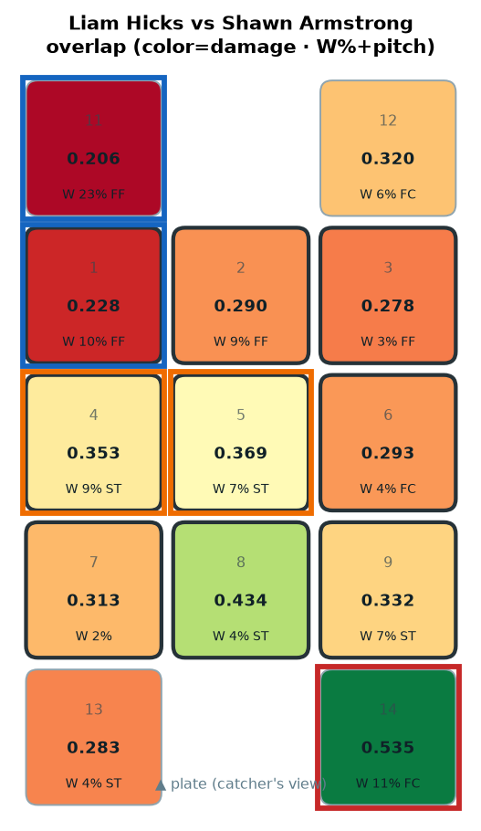
HOT OUT-DN-1B ← mainly FC (W 11.1%) · COLD OUT-UP-3B ← mainly FF (W 22.7%) · COLD HI-IN (3B) ← mainly FF (W 10.0%)
HOT OUT-DN-1B · COLD OUT-UP-3B · COLD HI-IN (3B)
Victor Mesa Jr.

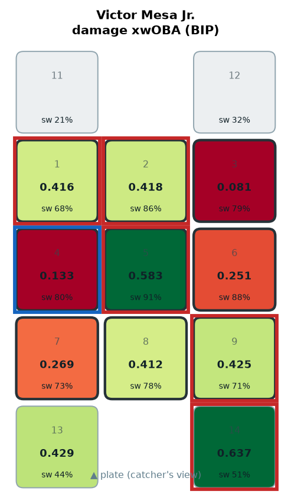
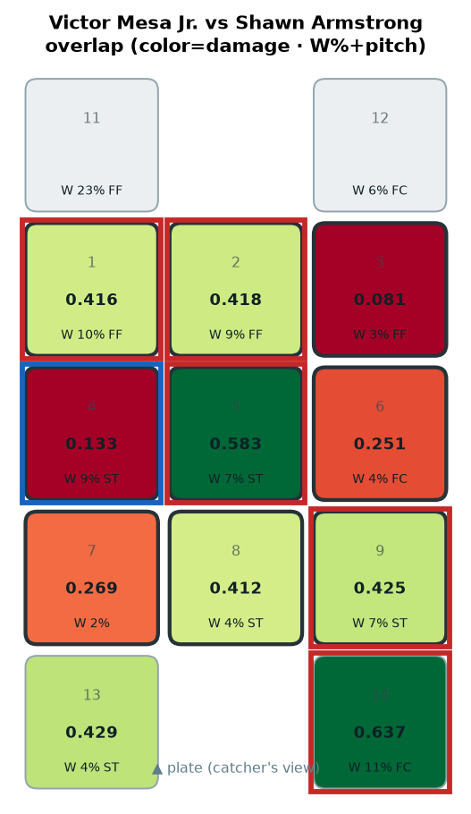
HOT OUT-DN-1B ← mainly FC (W 11.1%) · HOT HEART ← mainly ST (W 7.3%) · HOT HI-MID ← mainly FF (W 9.5%) · HOT LO-AWAY ← mainly ST (W 6.8%)
HOT OUT-DN-1B · HOT HEART · HOT HI-MID · HOT LO-AWAY
Chandler Simpson

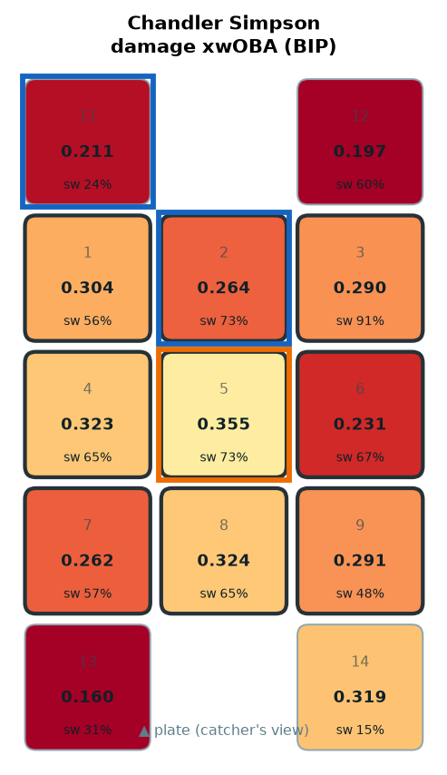
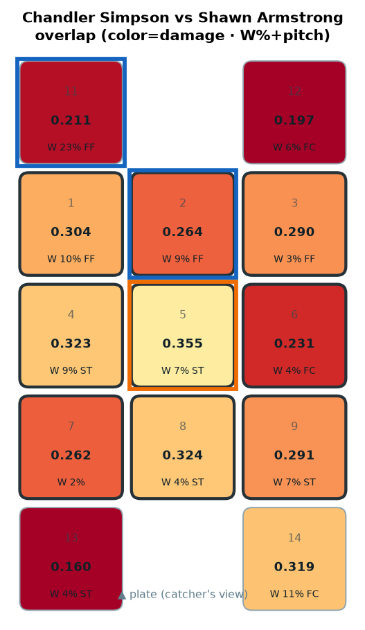
COLD OUT-UP-3B ← mainly FF (W 22.7%) · COLD HI-MID ← mainly FF (W 9.5%)
COLD OUT-UP-3B · COLD HI-MID · LOW_SAMPLE_RECENT
Richie Palacios

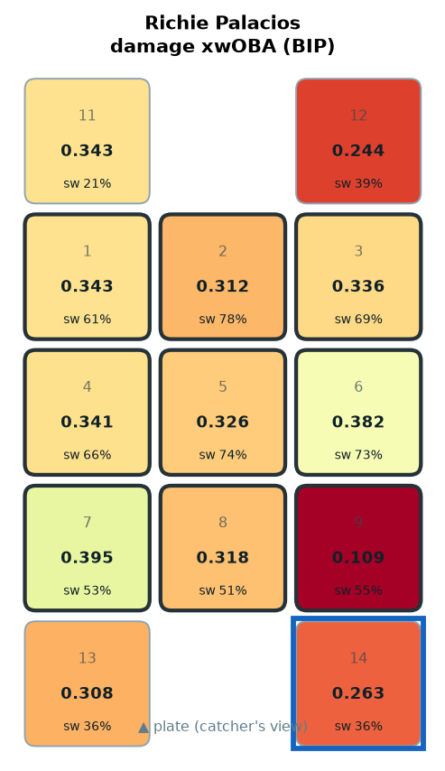
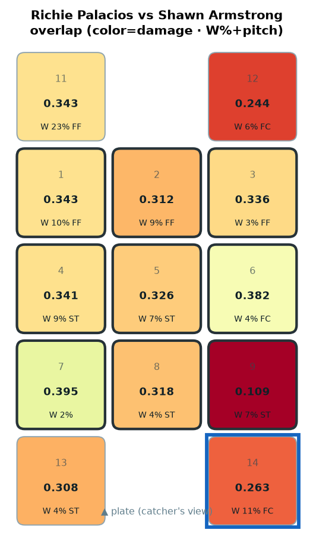
COLD OUT-DN-1B ← mainly FC (W 11.1%)
COLD OUT-DN-1B · LOW_SAMPLE_RECENT
Jonny DeLuca

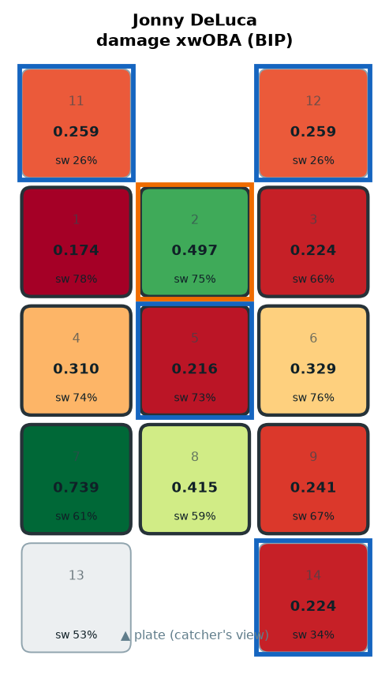
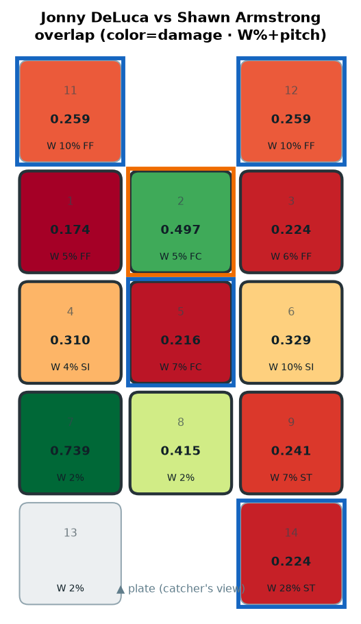
CONFIRM COLD HEART ← mainly FC (W 7.2%) · COLD OUT-DN-1B ← mainly ST (W 28.5%) · COLD OUT-UP-1B ← mainly FF (W 9.8%) · COLD OUT-UP-3B ← mainly FF (W 10.3%)
CONFIRM COLD HEART · COLD OUT-DN-1B · COLD OUT-UP-1B · COLD OUT-UP-3B
Taylor Walls

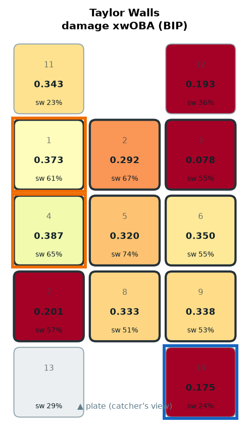
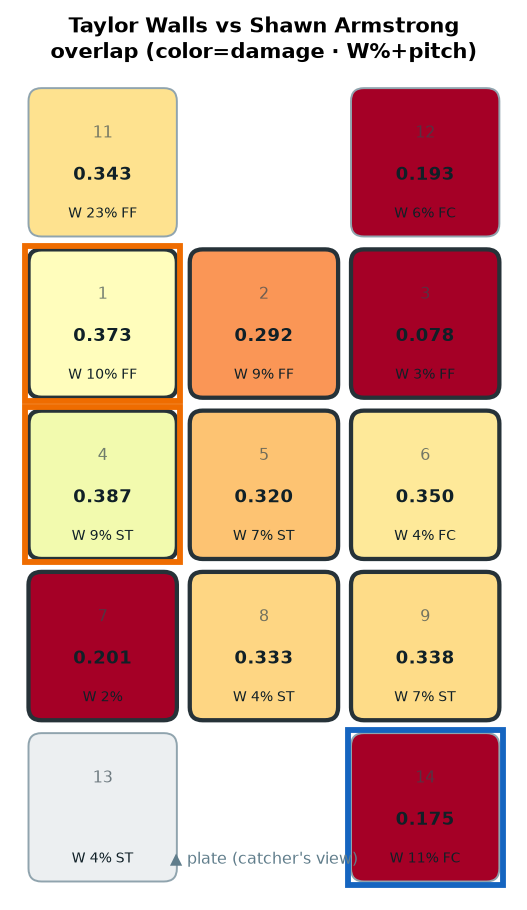
CONFIRM COLD OUT-DN-1B ← mainly FC (W 11.1%)
CONFIRM COLD OUT-DN-1B · LOW_SAMPLE_RECENT